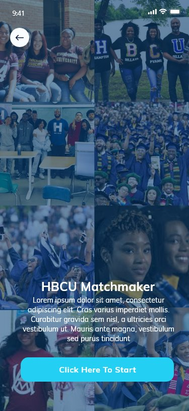
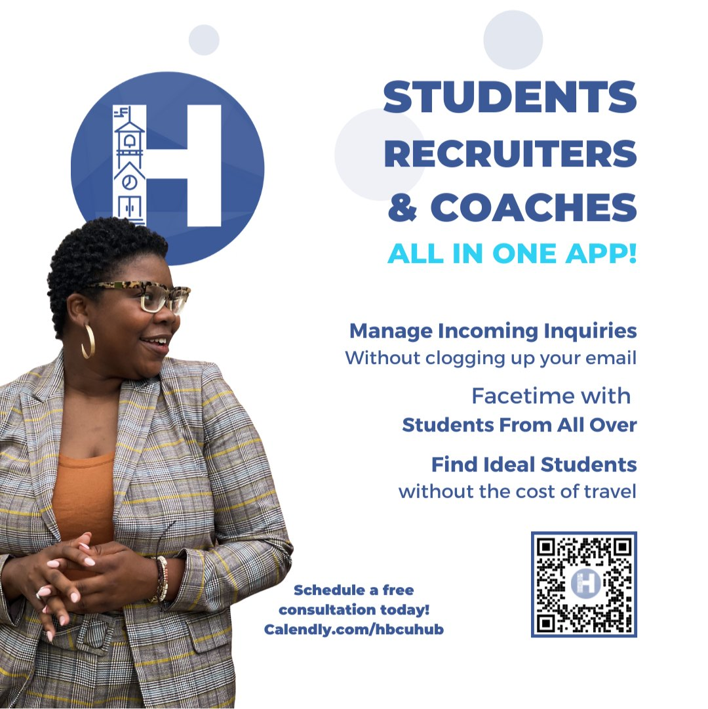

HBCU HUB: Mobile App Redesign
A UX engagement as part of a two-person design team, redesigning a mobile platform that connects students, recruiters, and coaches within the Historically Black Colleges and Universities community. The work focused on simplifying onboarding, gamifying the experience, and building an app that authentically represents HBCU culture.
- Role
- UX/UI Design Consultant, QA
- Team
- 2 UX/UI designers, small dev team, CEO
- Timeline
- January to October 2022
- Tools
- Figma, Marvel, Upwork
The problem
The original HBCU HUB app asked users to input all their information upfront: a cumbersome onboarding flow that created friction before users had any reason to invest.
The UI lacked dynamic content, didn't reflect HBCU culture visually, and had no way to serve three very different user types (students, recruiters, and coaches) within a single coherent experience. ADA compliance had not been considered.
The approach
We began with flow mapping to diagnose the existing user journey and identify where friction concentrated. The proposed redesign broke onboarding into digestible steps, introduced a matchmaker feature to connect students with their best-fit HBCUs, and built out distinct but unified interfaces for each user type.
Visual identity work drew on Gen-Z design trends (colorful minimalism, geometric shapes, muted colors) while staying grounded in HBCU cultural identity.
ADA compliance testing was conducted at the color and contrast level, with before and after documentation of every remediation.
Flow mapping and research
Current and proposed user flows were mapped in full, covering registration, onboarding branching, school browsing, recruiter access, and coach interfaces.
The proposed flow introduced skip options per Apple's Human Interface Guidelines, broke registration into steps, and allowed users to browse before committing, reducing the upfront cognitive load that was driving drop-off.


What was delivered
- Full current and proposed flow maps covering registration, onboarding, school browsing, and routing for each user type
- Gamified onboarding with the HBCU Matchmaker: students answer preference questions to surface best-fit schools and recruiters
- Three distinct but unified interfaces: students (academic profile, school filtering, scheduling), recruiters (student requests, appointments, contact), and coaches (sport-specific student discovery)
- ADA compliance testing and remediation: color contrast validation with before and after documentation for chat, text, and UI elements
- Gender accessibility redesign: a binary-only field expanded to include gender preference and birthday collection, with a confidentiality note
- Visual identity aligned with HBCU culture: colorful minimalism, geometric shapes, and muted tones, informed by Gen-Z design trends and popular social apps
- Iterated with the CEO, the dev team, and stakeholder feedback through design and testing
The redesigned app
The final app introduced The Yard, a social community layer connecting students across HBCU culture groups, alongside a schools browser with scholarship highlights and academic grading, sport-specific coach dashboards, and a recruiter interface for managing student requests and appointments.
The previous dark, undifferentiated UI was replaced with a light, culturally grounded design system.






From the CEO
“Jim has amazing attention to detail! It was great having him lead the effort for our new app build. Jim fit well into our ongoing staff and hit the ground running! From start to finish, it was an absolute pleasure to work with Jim!”